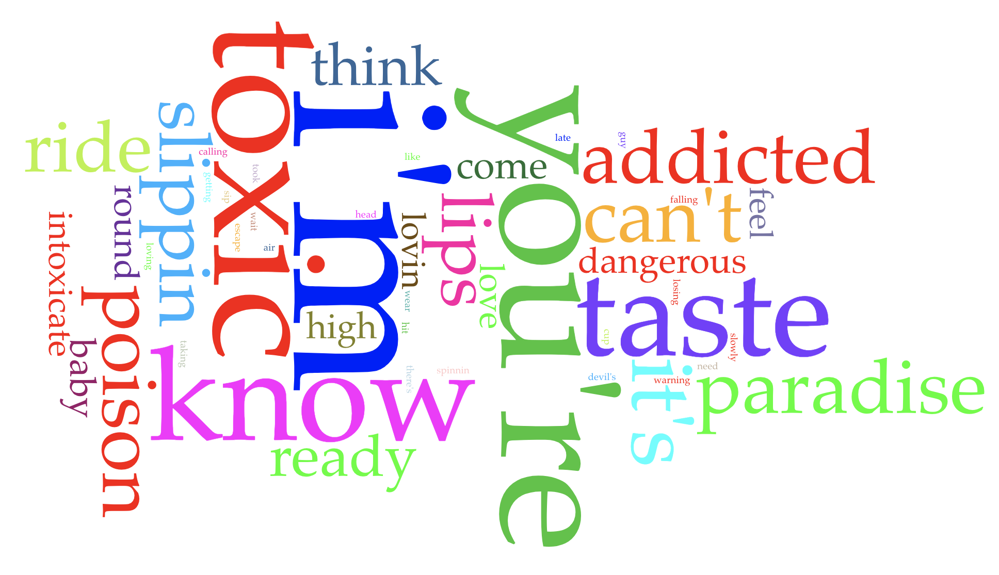

I choose to to do song lyrics from Pop artists from 2000s to now. The artists I picked were The Jonas Brothers, Why Don't We, Lady Gaga, Meghan Trainor, Tate McRae, and Britney Spears. I pick pop song lyrics to see if they all write close to the same way. However, I found out that they use "I'm _____" phrases and they also repeat the same word three times like "oh oh oh". I also noticed that each artist doesn't put those two phrases in all their songs.
Voyant Tools
With Voyant Tool, I used it to see what the tops words were for each of the songs.
This song is called "Poker Face" from Lady Gaga. This song is called "Exes" from Tate McRae. This song is called "No" from Meghan Trainor. This song is called "Sucker" from the Jonas Brothers. This song is called "Something Different" from Why Don't We. This song is called "Talk" from Why Don't We. This song is called "Alejandro" from Lady Gaga. This song is called "Been Like This" from Meghan Trainor. This song is called "Better When I'm Dancing" from Meghan Trainor. This song is called "Burnin'" from The Jonas Brothers. This song is called "Circus" from Britney Spears. This song is called "Fallin'" from Why Don't We. This song is called "Gimme More" from Britney Spears. This song is called "One Day" from Tate McRae. This song is called "Opps!... I Did It Again" from Britney Spears. This song is called "Run For The Hills" from Tate McRae.

This song is called "Toxic" from Britney Spears. This song is called "Taking You" from Tate McRae. This song is called "Waffle House" from The Jonas Brothers. This song is called "What A Man Gotta Do" from The Jonas Brothers. This song is called "Whoops" from Meghan Trainor. This song is called "You Broke Me First" from Tate McRae.
AntConc Tools
With AntConc Tool, I used it to see what the top phrase were used a lot and if the same like phrases are the same for each of the songs. I also analysis where some of the phrases are in a few songs and where they are placed.
With the four songs from Meghan Trainor, the most used lines are ones with one word repeated three times and the "I'm ___" phrases. However, not all the songs use those phrase a lot or they use it for most of the song(s)
With the four songs from Lady Gaga, the most used lines are ones with one word repeated three times and the "I'm ___" phrases. However, not all the songs use those phrase a lot or they use it for most of the song(s)
With the four songs from Tate McRae, the most used lines are ones with one word repeated three times and the "I'm ___" phrases. However, not all the songs use those phrase a lot or they use it for most of the song(s)
With the four songs from the Jonas Brothers, the most used lines are ones with one word repeated three times and the "I'm ___" phrases. However, not all the songs use those phrase a lot or they use it for most of the song(s)
With the four songs from Britney Spears the most used lines are ones with one word repeated three times and the "I'm ___" phrases. However, not all the songs use those phrase a lot or they use it for most of the song(s)
With the four songs from Why Don't We, the most used lines are ones with one word repeated three times and the "I'm ___" phrases. However, not all the songs use those phrase a lot or they use it for most of the song(s)
In the Gimme More song from Britney Spears and the Better When I'm Dancing from Meghan Trainor, the three repeating word lines are before other phrases or they are after everything.In the Burnin' Up song from the Jonas Brothers and the Better When I'm Dancing from Meghan Trainor, They both have the "I'm ____" phrase in their songs. In the songs the phrases comes before a single word like "up and yeah" that are the most after them.